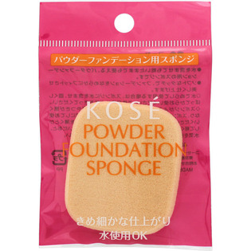
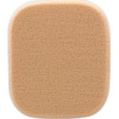

返回列表
产品名称：パウダーファンデーションスポンジ

コーセー パウダーファンデーションスポンジ ＿
メーカー コーセー
JANコード 4971710470642
商品の特徴
きめ細かな仕上がり
水使用ＯＫ
○水を含ませても乾いたままでも使える、パウダーファンデーション用のスポンジです。
○ソフトなタッチで、ファンデーションをなめらかにフィットさせ美しく仕上げます。
成分・分量
用法及び用量
【使用方法】
○水でぬらして使用する場合は、スポンジに水を含ませ、固くしぼってからお使いください。ご使用後は水気をきってください。